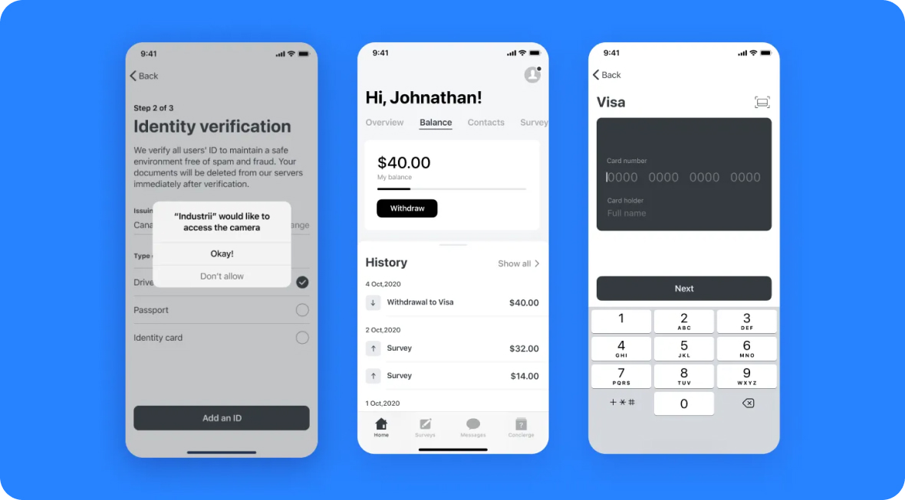
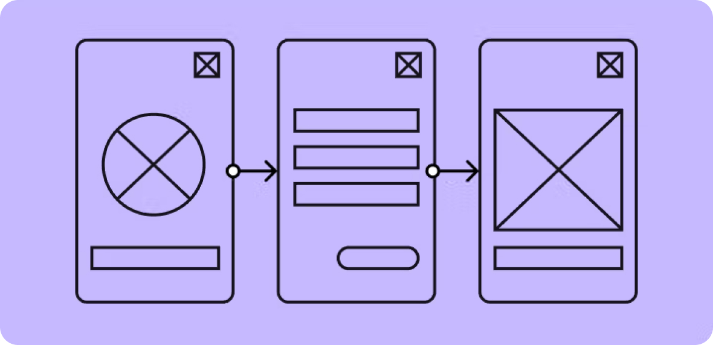
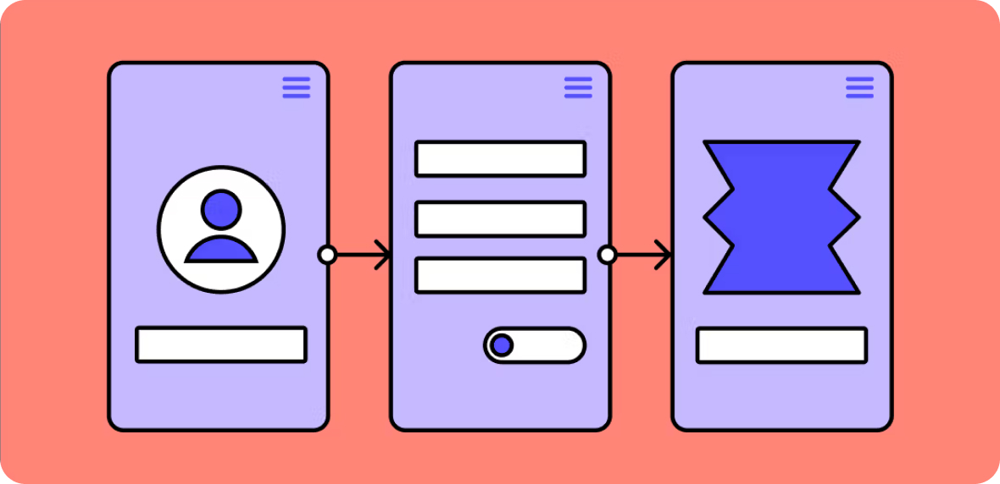
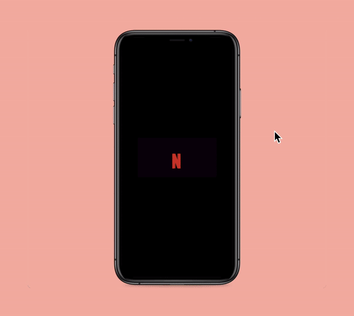
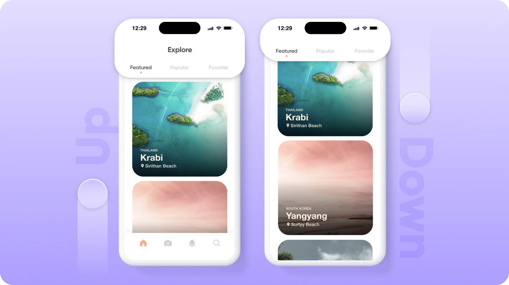
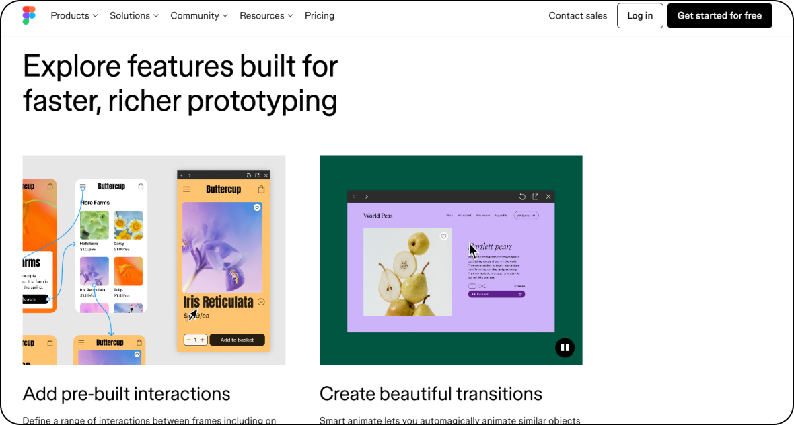
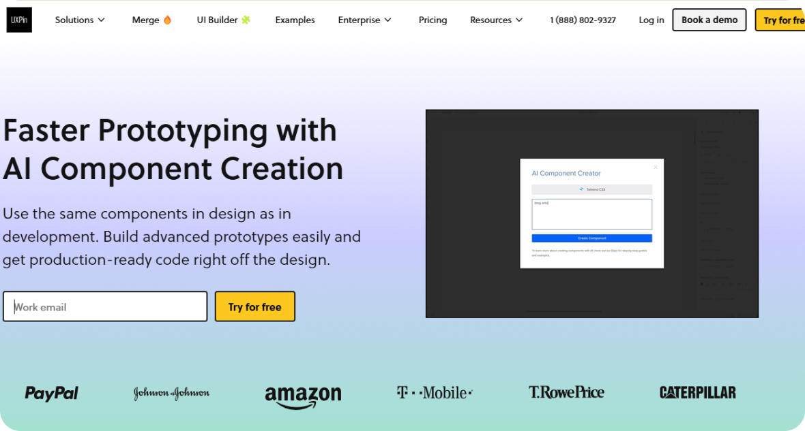

UX/UI дизайн
Прототип
Прототип — упрощенная, интерактивная модель будущего веб-сайта или приложения. Это своего рода рабочая версия, которая позволяет увидеть и протестировать основные функции, структуру и взаимодействие.

Для чего используют прототип
1. Визуализация идеи
Прототип позволяет наглядно представить, как будет выглядеть и работать будущий продукт. Это помогает команде разработчиков, дизайнеров и заказчику лучше понять концепцию и направление развития проекта.
2. Тестирование взаимодействия
С помощью прототипа можно отработать логику переходов между страницами, проверить удобство и интуитивность интерфейса. Это позволяет выявить и исправить ошибки на ранних стадиях.
3. Получение обратной связи
Прототип дает возможность собрать отзывы и мнения реальных пользователей. Это ценная информация, которая поможет улучшить продукт еще до его запуска.
4. Снижение рисков
Создание и тестирование прототипа позволяет выявить потенциальные проблемы и недочеты на начальных этапах, когда их исправление требует меньше времени и средств.
5. Ускорение разработки
Прототипирование дает возможность быстро "прощупать" различные варианты дизайна и функциональности, не погружаясь сразу в детальную реализацию.
6. Согласование требований
Прототип помогает наглядно продемонстрировать предлагаемые решения, что упрощает согласование с заказчиком и получение утверждения на следующие этапы.
7. Привлечение инвестиций
Наличие работающего прототипа продукта может стать весомым аргументом при поиске инвестиций или презентации идеи потенциальным партнерам.
Что включает в себя процесс прототипирования?
Процесс создания прототипов начинается с низкофидельных, или, иначе говоря, простых набросков. Это могут быть даже обычные бумажные чертежи с основными элементами интерфейса. На этом этапе детали не играют важной роли — главная цель состоит в понимании общей картины взаимодействия пользователя с приложением, определении основных функций и элементов управления.
Следующий шаг — создание цифровых wireframe-прототипов. Это более структурированные макеты, показывающие архитектуру приложения, но пока без финального дизайна. На этом этапе важно проработать логику переходов между экранами и протестировать основные пользовательские сценарии. Это позволяет избежать дорогостоящих доработок в будущем.
Заключительный этап — разработка высокофидельных интерактивных прототипов. Это детализированные макеты, максимально приближенные к финальному виду приложения. На этих прототипах пользователи могут «кликать» по интерфейсу и тестировать основные функции. Именно на этом этапе проводятся полноценные пользовательские тесты для оценки удобства и интуитивности. Прототип — упрощенная, интерактивная модель будущего веб-сайта или приложения. Это своего рода рабочая версия, которая позволяет увидеть и протестировать основные функции, структуру и взаимодействие.
Типы прототипов
Низкофидельные прототипы (Low-fidelity)
Низкофидельные прототипы (Low-fidelity prototypes) — это простые, быстро создаваемые макеты дизайна, которые используются на ранних этапах разработки для исследования и тестирования базовых концепций и функций продукта.
Основные характеристики низкофидельных прототипов:
Упрощенный дизайн: Такие прототипы имеют минимальную детализацию, используют грубые, неотшлифованные элементы вместо финальных визуальных решений. Внимание сфокусировано на основных функциях, а не на визуальной привлекательности.
Быстрое создание: Низкофидельные прототипы могут быть созданы очень быстро, с помощью простых инструментов, таких как бумага, карандаши, Post-it-заметки или цифровые рисовалки. Это позволяет оперативно проверять различные идеи.
Гибкость и итеративность: Низкофидельные прототипы легко изменять, добавлять или удалять элементы по мере получения обратной связи от пользователей. Это позволяет итеративно двигаться к оптимальному решению.
Низкофидельные прототипы используются на ранних этапах разработки для проверки концепций, тестирования гипотез с пользователями, получения обратной связи и согласования требований в команде. Они являются важным инструментом для итеративного UX-дизайна, помогая быстро и дешево собрать основные данные для принятия решений.
Минусы Низкофидельных прототипов:
Ограниченность функциональности: Поскольку низкофидельные прототипы фокусируются на базовых концепциях и взаимодействиях, они не могут отразить всю полноту функциональности конечного продукта. Это может затруднять получение качественной обратной связи от пользователей.
Несоответствие реальному опыту: Из-за упрощенного интерфейса и ограниченной интерактивности, низкофидельные прототипы могут не давать пользователям полное представление о том, как будет выглядеть и работать финальное приложение. Это может влиять на достоверность пользовательского тестирования.
Сложность оценки визуального дизайна: Поскольку в низкофидельных прототипах используются простые, неотделанные элементы, сложно оценить восприятие конечного визуального оформления пользователями.
Недостаток доверия заинтересованных сторон: Руководители или бизнес-заказчики, не имеющие опыта в разработке, могут скептически относиться к простым, "грубым" макетам и не видеть в них ценности для принятия решений.

Изображение Figma
Высокофидельные прототипы (High-fidelity)
Высокофидельные прототипы (High-fidelity prototypes) представляют собой детализированные, интерактивные макеты дизайна, которые максимально приближены к финальному виду разрабатываемого продукта.
Основные характеристики высокофидельных прототипов:
Высокая степень реалистичности: В высокофидельных прототипах используются финальные визуальные решения, настоящие данные и функциональность, приближенная к реальной. Пользователи могут "кликать" по интерфейсу, переходить между экранами, заполнять формы и выполнять другие действия, максимально близкие к тому, как они будут взаимодействовать с финальным продуктом.
Детализированный дизайн: Высокофидельные прототипы отличаются высокой степенью проработки деталей — от графических элементов и типографики до анимаций и микровзаимодействий. Это позволяет максимально точно оценить пользовательский опыт.
Сложность создания: Разработка высокофидельных прототипов требует больших временных и ресурсных затрат по сравнению с низкофидельными версиями. Для их создания обычно используются специализированные инструменты и навыки профессиональных дизайнеров.
Глубокое тестирование: Высокофидельные прототипы дают возможность провести комплексные пользовательские тесты, выявить оставшиеся проблемы и недостатки интерфейса, а также наглядно продемонстрировать конечный вид приложения заинтересованным сторонам.
Минусы Высокофидельных прототипов:
Высокие затраты времени и ресурсов: Создание высокофидельных прототипов требует значительных усилий дизайнера, разработчика и других специалистов. Этот процесс занимает гораздо больше времени и средств по сравнению с низкофидельными прототипами.
Риск фокусировки на деталях: Погружение в детальную проработку дизайна и функциональности прототипа может отвлечь команду от решения более важных стратегических задач на ранних этапах разработки.
Сложность внесения изменений: Высокофидельные прототипы, будучи более детализированными, сложнее поддаются изменениям. Это может затруднять процесс итерации и внесения корректировок.
Возможность упущения важных функций: Фокус на детальной проработке может привести к тому, что команда упустит из виду важные базовые функции, которые лучше было бы проверить на более ранних этапах.

Изображение Figma
Интерактивные прототипы
Интерактивные прототипы — это разновидность высокофидельных прототипов, которые предоставляют пользователям возможность взаимодействовать с макетом дизайна таким же образом, как они будут взаимодействовать с финальным продуктом.

Изображение:Proro Pie
Основные характеристики интерактивных прототипов:
Высокая степень интерактивности: Интерактивные прототипы позволяют пользователям "кликать" по элементам, переходить между экранами, заполнять формы и совершать другие действия, максимально приближенные к реальному использованию приложения. Это обеспечивает более глубокое понимание пользовательского опыта.
Использование специализированных инструментов: Для создания интерактивных прототипов используются специальные программные инструменты, такие как Figma, Adobe XD, InVision и др. Эти инструменты дают возможность связывать элементы интерфейса, добавлять переходы, анимации и другую функциональность.
Высокая степень реалистичности: Интерактивные прототипы отличаются детализированным дизайном, использованием финальных визуальных решений и настоящих данных. Это позволяет максимально приблизить тестирование к реальному пользовательскому опыту.
Возможность проведения тщательного тестирования: Интерактивность прототипов дает возможность проводить глубокие пользовательские исследования, выявлять оставшиеся проблемы взаимодействия и вносить последние корректировки перед разработкой финального продукта.
Создание более достоверного впечатления: Интерактивные прототипы производят более сильное впечатление на пользователей и заинтересованные стороны, чем статичные макеты. Это помогает лучше донести видение конечного продукта.
Несмотря на более высокие затраты времени и ресурсов по сравнению с низкофидельными прототипами, интерактивные высокофидельные прототипы играют ключевую роль в итеративном процессе разработки, позволяя тщательно протестировать пользовательский опыт перед финальной реализацией.
Инструменты для прототипирования
ProtoPie
ProtoPie — это передовой инструмент для создания интерактивных высокофидельных прототипов, способный охватить широкий спектр цифровых платформ.
Ключевые преимущества и возможности ProtoPie:
Универсальность: Инструмент позволяет создавать прототипы для смартфонов, ПК, планшетов, умных часов, автомобилей и других устройств, интегрируя при этом API, Arduino, Logitech G29 и другие технологии.
Признание экспертов: В 2022 году ProtoPie был признан ведущим инструментом для продвинутого прототипирования согласно опросу UX Design Tools Survey.
Именитая клиентская база: Среди клиентов ProtoPie - известные дизайн-ориентированные компании, такие как Xbox, Ubisoft, Spotify, BMW Group, HBO Max, Samsung, Electronic Arts и Amazon.
Кроссбраузерная доступность: Работа с ProtoPie происходит через веб-браузер, что исключает необходимость в дополнительной установке и настройке.
Гибкая ценовая политика: Бесплатная версия предоставляет базовые возможности, в то время как платная версия стоимостью от $67 в месяц открывает доступ к расширенному функционалу, включая совместную работу.

Изображение ProtoPie
Основные функции, которые можно найти в настройках прототипов ProtoPie:
- резиновый лейаут (сетки, направляющие, привязки);
- скролл, свайп, парралакс, переходы между экранами, горизонтальный скролл;
- любые ховеры любых объектов;
- расширенные настройки тултипов, поп-апов и модальных окон;
- продвинутые настройки анимации взаимодействий;
- формулы, переменные и variables (для создания паролей, шаффлов, операций и прочего);
- постоянно обновляющаяся библиотека носителей (модели iPhone, AppleWatch, Samsung, Google Pixel, ТВ и прочие);
- библиотека компонентов и блоков, возможность создать мастер-компонент для его переиспользования;
- настройки доступности по WCAG;
- «живой» онбординг;
- загрузка и анимация фото-, аудио- и видеофайлов, плейлистов и других списков;
- загрузка анимационных файлов из Lottie;
- Handoff — функция записи интеракций с прототипом, включая комментарии голосом и добавление аудиодорожек;
- ProtoPie Connect — возможность тестировать прототип на различных носителях;
- встроенная функция пользовательских тестирований.
Figma
Для прототипирования Фигма является:
Мощным инструментом. Фигма предлагает богатые возможности по созданию высокофидельных интерактивных прототипов.
Гибким решением. Платформа позволяет легко связывать элементы интерфейса, добавлять анимации и сложные взаимодействия.
Эффективным для командной работы. Фигма поддерживает совместное редактирование прототипов в режиме реального времени.
Интегрированным с экосистемой. Инструмент интегрируется с другими популярными решениями для тестирования, аналитики и разработки.
Масштабируемым. Фигма справляется с созданием сложных прототипов с большим количеством элементов и взаимодействий.
Плюсы Figma
За счёт высокой популярности самой программы раздел прототипирования постоянно улучшается.
К тому же Figma сделана для совместной работы в режиме реального времени, а это большой плюс, если над проектом работает большая команда из менеджеров, маркетологов, дизайнеров и разработчиков. Можно подключить большое количество плагинов от других программ прототипирования, например ProtoPie.
Минусы Figma c точки зрения интерактивных прототипов
- Данные могут быть введены только курсором, клавиатурой и тапом.
- Подключить прототип можно только на стандартные девайсы (ПК, смартфон, планшет).
- Невозможно выстроить сложную логику и сценарии взаимодействий.
- Невозможно сделать прототипы с фреймами, в которых находится несколько состояний.
- Нельзя подключить реальные динамические данные (выпадающие списки, карточки и прочее).
- Нет превью юзерфлоу.

Скриншот Figma
UXPin
UXPin - это кодовое прототипирование
- В отличие от визуальных редакторов, UXPin основан на коде, что обеспечивает большую гибкость и возможности
- Все необходимое для прототипирования и тестирования уже встроено в сервис, без необходимости в плагинах
Универсальность и доступность
- UXPin можно использовать как в браузере, так и в виде настольного приложения для Mac и Windows
- Это позволяет работать как в онлайне, так и в автономном режиме
Эффективный рабочий процесс
- Кодовый подход UXPin поддерживает итеративные циклы разработки и тестирования прототипов
- Интеграция с другими инструментами помогает встроить прототипирование в общий рабочий процесс

Скриншот UXPin
Советы для прототипирования
1. Начинай с низкой фидельности
Начни с бумажных скетчей или простых инструментов, таких как Figma или Balsamiq. Создавай быстрые, минималистичные прототипы, чтобы быстро протестировать основные функции. Переходи к высокофидельным прототипам только после уточнения основных функций.
2. Фокусируйся на ключевых сценариях
Определи наиболее важные случаи использования, например, регистрация или оформление заказа. Сосредоточься на них, прежде чем расширять прототип.
3. Вовлекай пользователей
Проводи пользовательские тесты прямо на рабочем месте или в фокус-группах. Спрашивай пользователей, что им нравится, что вызывает затруднения и что можно улучшить.
4. Итеративно улучшай
После каждого раунда тестирования обновляй прототип на основе полученных инсайтов. Повторяй этот цикл, двигаясь к финальному дизайну.
5. Интегрируй с разработкой
Используй инструменты, которые легко взаимодействуют с кодом, например, UXPin или InVision. Синхронизируй прототипы с библиотекой компонентов, чтобы ускорить внедрение.
Итоги
Низкофидельные прототипы
Простые макеты или наброски, которые демонстрируют основные идеи и структуры, но не включают детализированного дизайна.
Среднеуровневые прототипы
Более детализированные версии, которые могут включать некоторые интерактивные элементы, позволяя пользователям взаимодействовать с основными функциями.
Высокофидельные прототипы
Полномерные и интерактивные модели, максимально приближенные к конечному продукту. Такие прототипы позволяют детально проверять пользовательский опыт.
Высокофидельные прототипы
Прототипы с возможностью взаимодействия, которые позволяют пользователям проверять сценарии использования и функциональные возможности.
Практика
Создание низкоуровневого прототипа
Выбери приложение или веб-сайт, который тебе нравится, и создай низкоуровневый прототип, используя только бумагу и карандаш. Включи основные экраны и элементы интерфейса.
Интервью с пользователями
Проведи интервью с 3-5 потенциальными пользователями для сбора требований к новому мобильному приложению. Изучи их потребности и предпочтения.
Создание среднеуровневого прототипа
На основе собранной информации и низкоуровневого прототипа разработай среднеуровневый интерактивный прототип с помощью Figma.
Тестирование с пользователями
Подготовь свой среднеуровневый прототип для пользовательского тестирования. Найди 5-7 пользователей и наблюдай, как они взаимодействуют с прототипом, фиксируя их отзывы и проблемные места.
Создание высокоуровневого интерактивного прототипа
На основе полученной обратной связи создай высокоуровневый интерактивный прототип, который демонстрирует все ключевые функции и пользовательские сценарии.